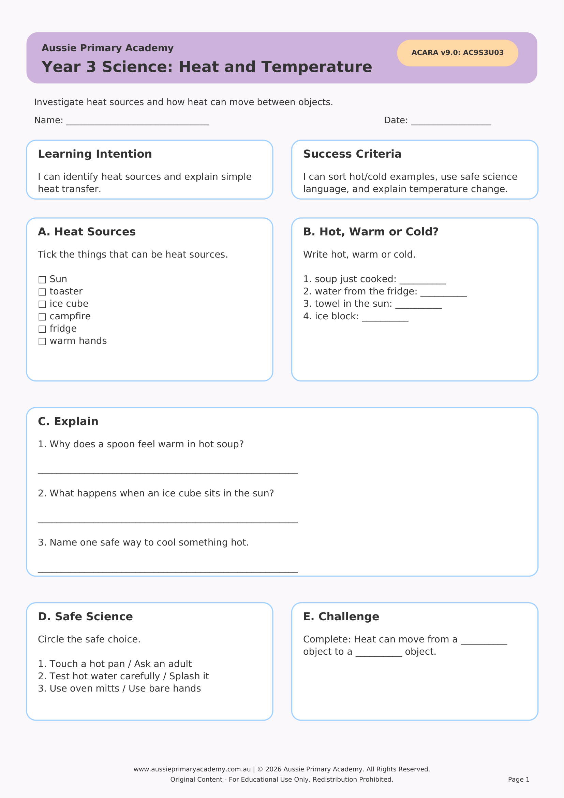

Year 3 · Science · Physical Sciences · Free Printable
Heat and Temperature
Help Year 3 students explore heat sources, temperature and how heat can change the state of materials.
Resource Details
- Year level: Year 3
- Subject: Science
- Focus: Heat and Temperature
- Resource type: Free printable worksheet · PDF
- Curriculum status: Supports Australian Curriculum v9.0 · AC9S3U02
- Best for: Classroom practice, homework, tutoring or homeschool learning
Worksheet Preview

Learning Intention
Students will identify heat sources, describe temperature changes and explain how heat can change the state of materials.
Australian Curriculum
AC9S3U02
Identify sources of heat and explore how heat can be produced and transferred, and how it can change the state of materials.
Teacher Notes
Discuss everyday heat sources (sun, stove, friction). Link to melting, freezing and boiling with simple examples students know.
Skills Practised
- Identifying heat sources
- Understanding temperature
- Changes of state
- Science vocabulary